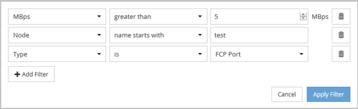
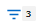

Demander de modifier un document
Demander de modifier un document Modifier sur GitHub
Modifier sur GitHub Guide des contributeurs
Guide des contributeursFiltrage du contenu de la page d’inventaire
Contributeurs
Vous pouvez filtrer les données de page d’inventaire dans Unified Manager pour localiser rapidement des données en fonction de critères spécifiques. Vous pouvez utiliser le filtrage pour affiner le contenu des pages Unified Manager afin d’afficher uniquement les résultats qui vous intéressent. Ceci fournit une méthode très efficace pour n’afficher que les données qui vous intéressent.
Description de la tâche
Utilisez Filtering pour personnaliser la vue de grille en fonction de vos préférences. Les options de filtre disponibles sont basées sur le type d’objet affiché dans la grille. Si des filtres sont actuellement appliqués, le nombre de filtres appliqués s’affiche à droite du bouton filtre.
Trois types de paramètres de filtre sont pris en charge.
| Paramètre | Validation |
|---|---|
Chaîne (texte) |
Les opérateurs sont contient, commence par, se termine par et ne contient pas. |
Nombre |
Les opérateurs sont supérieurs à, inférieurs à, dans le dernier et entre. |
Enum (texte) |
Les opérateurs sont is et n’est pas. |
Les champs colonne, opérateur et valeur sont requis pour chaque filtre ; les filtres disponibles reflètent les colonnes filtrables de la page actuelle. Le nombre maximal de filtres que vous pouvez appliquer est de quatre. Les résultats filtrés sont basés sur des paramètres de filtre combinés. Les résultats filtrés s’appliquent à toutes les pages de votre recherche filtrée, pas seulement à la page actuellement affichée.
Vous pouvez ajouter des filtres à l’aide du panneau filtrage.
-
En haut de la page, cliquez sur le bouton Filter. Le panneau filtrage s’affiche.
-
Cliquez sur la liste déroulante de gauche et sélectionnez un objet, par exemple Cluster ou un compteur de performances.
-
Cliquez sur la liste déroulante centrale et sélectionnez l’opérateur que vous souhaitez utiliser.
-
Dans la dernière liste, sélectionnez ou entrez une valeur pour compléter le filtre de cet objet.
-
Pour ajouter un autre filtre, cliquez sur +Ajouter filtre. Un champ de filtre supplémentaire s’affiche. Effectuez ce filtre en suivant la procédure décrite dans les étapes précédentes. Notez que lors de l’ajout de votre quatrième filtre, le bouton +Ajouter filtre ne s’affiche plus.
-
Cliquez sur appliquer le filtre. Les options de filtre sont appliquées à la grille et le nombre de filtres s’affiche à droite du bouton filtre.
-
Utilisez le panneau filtrage pour supprimer des filtres individuels en cliquant sur l’icône de corbeille située à droite du filtre à supprimer.
-
Pour supprimer tous les filtres, cliquez sur Réinitialiser en bas du panneau de filtrage.
Exemple de filtrage
L’illustration montre le panneau filtrage avec trois filtres. Le bouton +Ajouter filtre s’affiche lorsque vous avez moins de quatre filtres que le maximum.

Après avoir cliqué sur appliquer le filtre, le panneau filtrage se ferme, applique vos filtres et affiche le nombre de filtres appliqués ( 